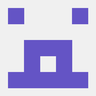
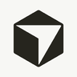
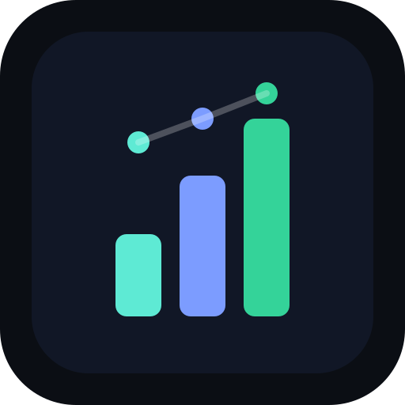

Static design mockups of the planned web dashboard. They cross-link like a prototype: nav, repo names, the ⚙ quick-settings gear and PR links all work. Everything renders one frozen moment — Mon 2026-07-27 13:51:26 CEST — with the CodeRabbit quota blocked, one review in flight, four PRs queued for different reasons, one held, a fix session running and one broken host. Countdowns tick live.
The queue at a glance: quota banner with countdown, needs-attention, in-flight round with per-bot state, the queue with its wait reasons, held PRs, fix sessions with per-host health, and a live activity feed.
Try it: the ⚙ next to any repo name opens the quick-settings slide-over for that repo — × or the backdrop closes it. It starts open so it isn't missed.
The rail on the left picks the repo; the panel holds Runs/Required per bot, trigger modes, the fix-agent block and the unenroll contract. The save is painted with its impact preview open.
Enrollment in one save. The active step is the start policy — what happens to the PRs that are already open, with the quota cost spelled out before you commit.
Compare the four bots, see which are actually set up, and sign up. Suggestions state their criterion; signup links that are referral links say so.
Readiness that stays useful: GitHub access, the required and recommended CLI tools as a tool × host matrix, services per host, the queue's home, bots and repos.
Carrier#85 mid-fix: findings grouped by severity with thread state, the running fix session, round history, and the cached-observation banner.
The defaults every repo inherits — reviewers, autofix, pacing, auto-review scope. Each row says how many repos override it, and the save shows its blast radius before it commits.
The empty state before anything exists: no state ref, no bots, no repos. Plain language only — no queue vocabulary before you’ve enrolled anything.
The settled counterpart: a verdict instead of a worklist, and declined findings showing the bot’s reply — withdrawn or stood by.

Codex
Cursor Bugbot Macroscope coderabbit-queue
pengeoversikt IPTVChecker Carrier Sportarr BonusVarsler musikkfest Hha-gradient-card (no favicon)